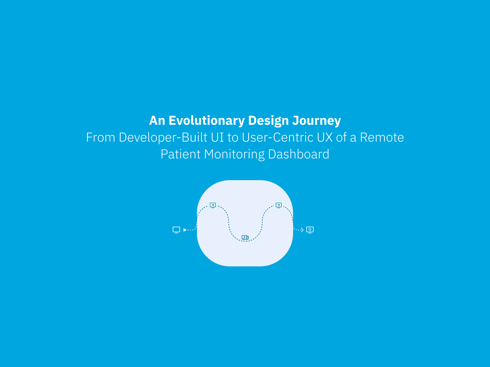
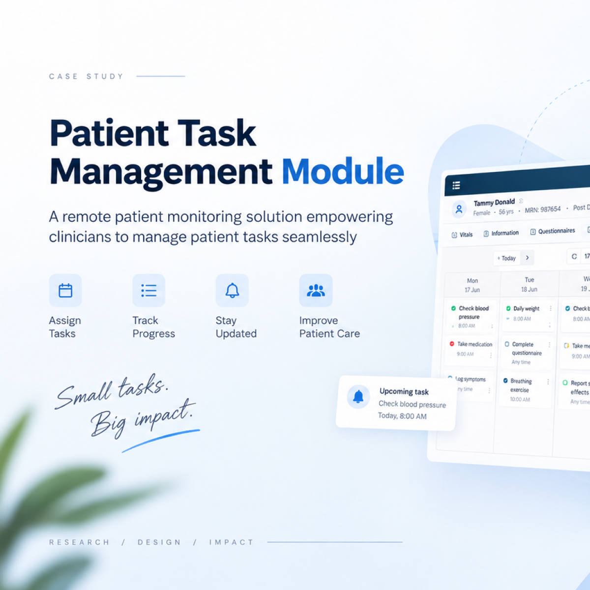
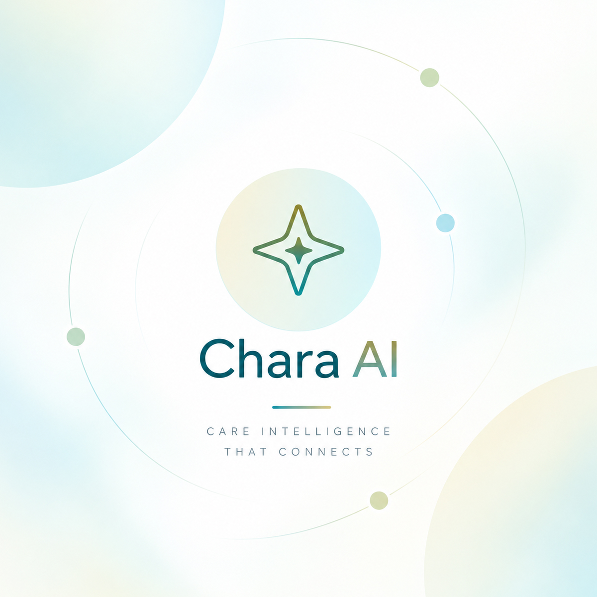
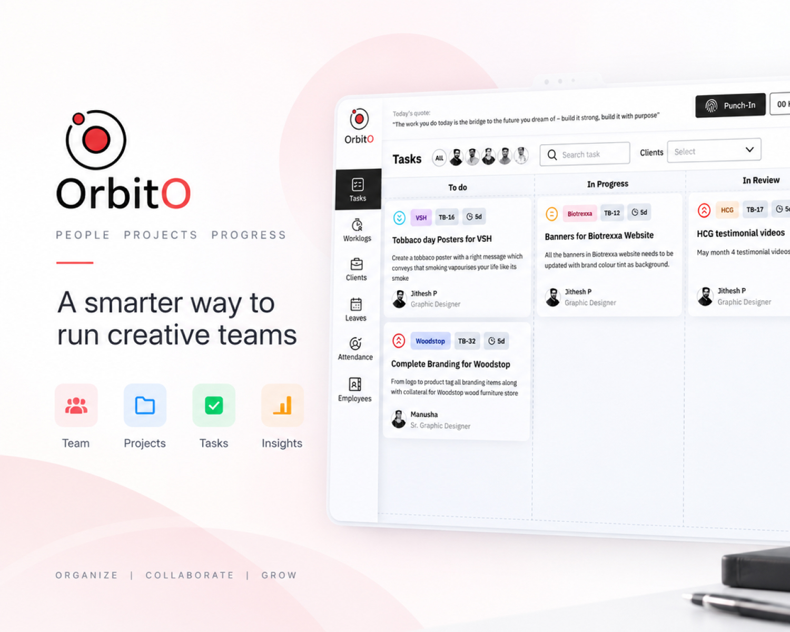

I design calm into clinical chaos.
Senior UX/UI Designer with 10+ years turning fragmented healthcare software, patient monitoring dashboards, staffing platforms, and care workflows into products clinicians actually trust.
Five products, one throughline: less friction for the people delivering care.
Remote patient monitoring, on-demand staffing, clinical task management, and the internal tools that keep a design team honest.

Reimagining Care@Home
Evolving a remote patient monitoring platform from a developer-built interface into a scalable, user-centered product for clinicians.

Patient Task Management
Moving task control from hardcoded backend logic into the clinician's own hands.
NurseReady
On-demand nurse staffing for hospitals, built from a raw business idea to a dev-ready product.

Chara AI
An AI clinical companion concept, stitched into the RPM workflow.

Orbito
A lightweight, agency-first system that replaced spreadsheets and DMs with one shared source of truth.
Ten years of Design Journey
From web design to leading UX for healthcare SaaS platforms used by real clinicians.
Let's build something clinicians actually enjoy using.
Open to senior/lead UX roles and select consulting work in healthcare and complex SaaS. Based in Bengaluru, happy to work remote.